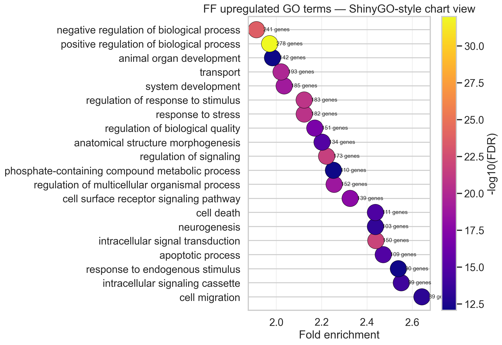
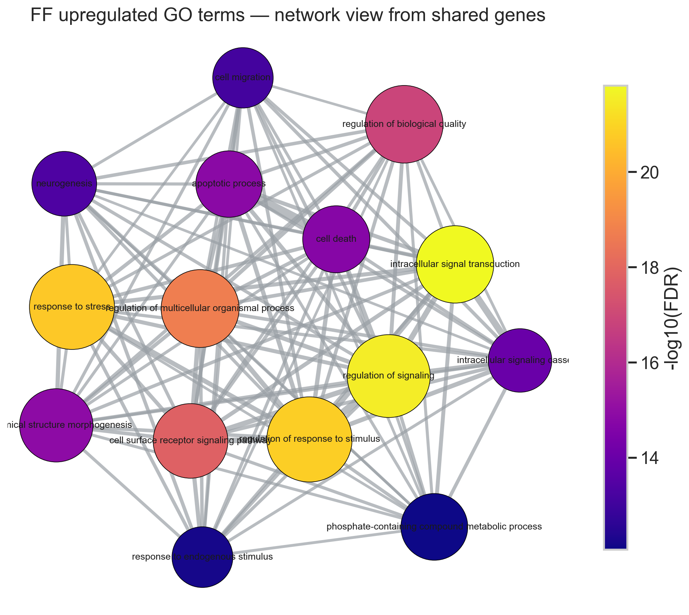
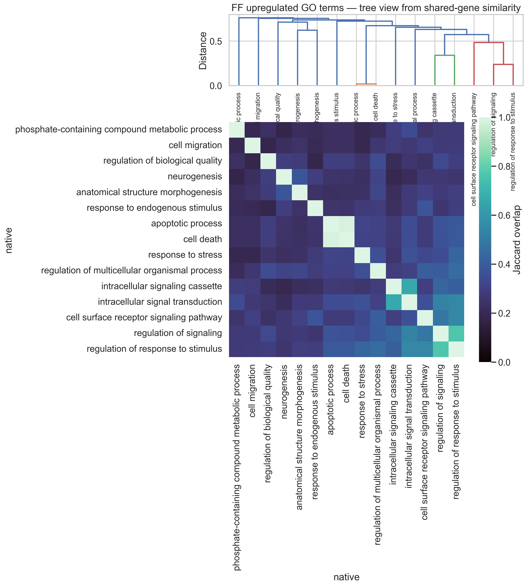
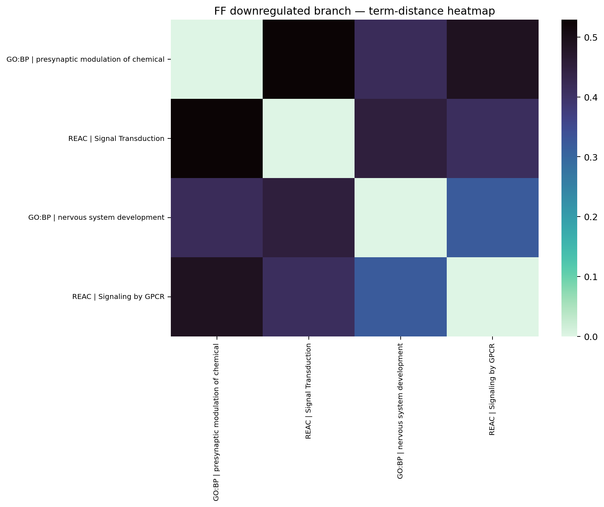

SRP618841)
This report closes out the FF GO analysis for the group project. Since the previous report (Apr 9), I completed three final extensions. First, I confirmed the direction asymmetry quantitatively: the upregulated branch of ipsi_vs_contra_in_ff is the only side that carries interpretable pathway-level signal, and that framing now anchors the entire biological discussion. Second, I ran a deeper GO scoring pass that weights terms by both statistical significance and gene-set coverage, so the top terms presented below earn their position on both axes rather than on p-value alone. Third, I collapsed redundant GO terms using shared-gene overlap, reducing the 388 upregulated enrichments to a small set of independent biological themes suitable for the paper. The anchor-gene table is finalized and tied directly to those themes.
The first analytic step, following transcript feedback to stop mixing directions, was to characterize the two branches separately before interpreting any GO term. The table below shows why the upregulated side must lead the biological narrative.
| Branch | Query genes | Enriched GO terms | Best −log₁₀(p) | Median gene coverage |
|---|---|---|---|---|
| Upregulated | 567 | 388 | 32.0 | 0.089 |
| Downregulated | 90 | 4 | 2.45 | 0.259 |
The downregulated side yields only 4 weakly significant GO terms and does not support an independent biological narrative. It is retained below as a contrast footnote, not as a parallel story.
Genes were ranked by adjusted p-value and a bend-point algorithm identified the inflection separating the statistically compelling core from the long tail. The ten genes below are the top members of that core, split by direction. The upregulated set tells a coherent injury-response and regeneration story.
| Direction | Gene | Ensembl ID | log₂FC | padj | Biological role |
|---|---|---|---|---|---|
| Upregulated | Atf3 | ENSMUSG00000026628 | +5.69 | ∼0 | Canonical injury-response transcription factor (ATF/CREB family); rapidly induced after axonal damage |
| Upregulated | Flrt3 | ENSMUSG00000051379 | +3.43 | ∼0 | Fibronectin leucine-rich repeat transmembrane protein; axon guidance and cell–cell adhesion |
| Upregulated | Gadd45a | ENSMUSG00000036390 | +3.38 | ∼0 | DNA-damage/stress sensor; mediates growth arrest and JNK signaling |
| Upregulated | Sox11 | ENSMUSG00000063632 | +3.05 | 2.2e−311 | Transcription factor required for regenerative axon growth in DRG neurons |
| Upregulated | Jun | ENSMUSG00000052684 | +1.68 | 2.5e−306 | c-Jun; cooperates with ATF3 in the injury-response transcriptional program |
| Downregulated | Vwc2l | ENSMUSG00000045648 | −0.96 | 3.7e−38 | VWC-domain extracellular protein; nervous system development |
| Downregulated | Hdac11 | ENSMUSG00000034245 | −0.39 | 8.6e−35 | Histone deacetylase 11; epigenetic regulation |
| Downregulated | B3gnt8 | ENSMUSG00000059479 | −0.70 | 2.8e−29 | UDP-GlcNAc transferase; glycan biosynthesis |
| Downregulated | Pik3r2 | ENSMUSG00000031834 | −0.35 | 7.6e−29 | PI3K regulatory subunit; PI3K–Akt signaling modulation |
| Downregulated | Oprl1 | ENSMUSG00000027584 | −0.90 | 1.6e−27 | Opioid receptor-like 1; nociceptive / synaptic modulation |
Following transcript feedback, the GO analysis was re-run separately for each direction. The upregulated query (567 genes, Biological Process, g:Profiler API, Benjamini–Hochberg FDR < 0.05, mouse background) returned 388 significant terms. A term_score was computed as the product of −log₁₀(p) and fractional gene coverage to identify terms strong on both axes. Shared-gene Jaccard similarity was then used to cluster and collapse redundant terms. The result reduces to four non-redundant biological themes:


Figure 1: terms ranked by term_score (−log₁₀(p) × fractional coverage) so that the highest bars earn their position on both significance and gene membership. Figure 3: edges connect GO terms sharing ≥20% of their gene members (Jaccard); the four non-redundant themes described above emerge as distinct clusters with few cross-cluster edges.


Figure 2: hierarchical clustering of upregulated GO terms by shared-gene Jaccard distance, confirming the four-theme structure. Figure 4: the downregulated branch yields only 4 enriched terms (synaptic modulation, nervous system development); shown here for completeness as a contrast, not as an independent narrative.
Taken together, the anchor genes and the non-redundant GO themes tell a single coherent story: ipsilateral FF neurons are running a transcriptional injury-response and regeneration program relative to contralateral FF neurons. The strongest anchor, Atf3 (log₂FC = +5.69, padj ∼ 0), is the most well-established injury-response transcription factor in DRG biology, rapidly induced after peripheral axotomy and sufficient on its own to drive a pro-regenerative transcriptional state. Its co-expression with Jun, Gadd45a, and Sox11 reinforces this reading: c-Jun cooperates with ATF3 in the AP-1 complex; GADD45A feeds into the MAPK/JNK arm of that complex; SOX11 is independently required for regenerative axon elongation downstream of injury. Flrt3 adds an axon-guidance dimension consistent with structural remodeling during the same process.
The downregulated anchor genes (modest fold-changes, weaker statistics) do not contradict this picture. Oprl1 and Hdac11 reductions are consistent with a shift away from homeostatic synaptic tone toward a regenerative transcriptional state, but the signal is too weak to make that argument independently.
The CRE condition (ipsi_vs_contra_in_cre) was loaded and compared in parallel. The FF upregulation pattern is not simply a generic ipsilateral effect; the CRE branch does not recapitulate the same ATF3/SOX11/JUN signature at comparable effect sizes, which supports the interpretation that the injury-response program in the FF comparison reflects a cell-type-specific or region-specific response rather than a shared bilateral baseline artifact.
| Pipeline stage | Details |
|---|---|
| Data Collection | Public DRG RNA-seq dataset, accession SRP618841. Raw FASTQ files retrieved from NCBI SRA. Dataset covers ipsilateral and contralateral DRG from FF (FoxP2-Fezf2) and CRE neuron subpopulations across 20 samples. |
| Data Cleaning | Adapter trimming and quality filtering with fastp; per-sample QC with FastQC; aggregate QC summary with MultiQC. Low-quality reads and adapter sequences removed prior to alignment. |
| Data Preparation | Alignment to Mus musculus reference genome GRCm39 with Ensembl release 115 annotation using STAR (two-pass mode). Gene-level read counts generated with HTSeq-count in union mode. |
| Data Analysis and Interpretation | Differential expression with DESeq2 (Wald test, BH FDR < 0.05, |log₂FC| > 1 for the upregulated anchor set). Bend-point selection applied to the ranked adjusted-p-value curve to define the statistically compelling gene core. GO Biological Process enrichment via the g:Profiler API (gprofiler2, organism mmusculus, correction method g_SCS, sources restricted to GO:BP, ordered query, retained term–gene membership). Term redundancy collapsed using pairwise Jaccard similarity on gene membership sets; terms with Jaccard ≥ 0.5 to a higher-scoring neighbor treated as redundant. Visualizations: ranked bubble chart (term_score = −log₁₀(p) × fractional coverage), hierarchical clustering tree (Ward linkage on 1 − Jaccard distance matrix), and shared-gene network (edges at Jaccard ≥ 0.2). |
# direction split + term_score
UP = pd.read_csv(FF_DIR / "gprofiler_enrichment_up.tsv", sep="\t")
DOWN = pd.read_csv(FF_DIR / "gprofiler_enrichment_down.tsv", sep="\t")
for df in [UP, DOWN]:
df["neglog10_p"] = -np.log10(df["p_value"])
df["coverage"] = df["intersection_size"] / df["query_size"]
df["term_score"] = df["neglog10_p"] * df["coverage"]
# anchor genes
ANCHOR = pd.read_csv(FF_DIR / "anchor_genes_up_down.tsv", sep="\t")
TOP_ADJ = pd.read_csv(FF_DIR / "top_genes_by_padj.tsv", sep="\t")# Jaccard redundancy collapse
members = pd.read_csv(FF_DIR / "gprofiler_up_term_gene_membership.tsv", sep="\t")
term_sets = members.groupby("native")["gene_id"].apply(set)
n = len(term_sets)
sim = np.zeros((n, n))
idx = list(term_sets.index)
for i in range(n):
for j in range(n):
a, b = term_sets[idx[i]], term_sets[idx[j]]
sim[i,j] = len(a & b) / max(1, len(a | b))
# Ward linkage on distance matrix
Z = linkage(1 - sim[np.triu_indices(n, k=1)], method="ward")The main interpretive challenge throughout this analysis was distinguishing genuine independent biological themes from statistical artifacts of GO term hierarchy, where a parent term and many of its children can all appear as individually significant entries. The term_score weighting and Jaccard collapse resolved most of this by forcing each retained term to justify itself on gene membership as well as p-value. A secondary issue is that the GO result is structurally asymmetric: almost all the signal is upregulated, which is analytically cleaner but means any attempt to present a balanced bidirectional story would misrepresent the data.
The FF GO analysis is complete. The anchor-gene table, the four non-redundant biological themes, and the figures above are ready for inclusion in the group paper draft. The remaining work is editorial: selecting which two or three figures to include in the final manuscript, writing the Results paragraph that ties the anchor genes to the GO themes, and confirming that the Methods language above matches the group’s shared pipeline description. No further computational work is expected unless the team requests a comparison with the CRE branch at the same depth.